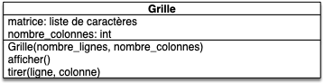

Projet : bataille navale
Vous allez coder une version simplifiée de la bataille navale.
Nous allons travailler avec la boucle de programmation classique en développement :
Boucle de programmation
- on code une petite fonctionnalité
- on vérifie dans le programme principale ou dans un programme principal de test que cette fonctionnalité fonctionne
- on convertit cette vérification en test que l'on conserve
On testera les fonctionnalités dans un fichier main_fonctionnalité.py qui sera refait à chaque test de fonctionnalité.
Le fichier main.py contiendra le jeu en lui même.
Projet
But
Nous voulons coder un jeu de bataille navale. Nous n'allons pas coder le jeu à deux joueurs, mais créer une interface pour un joueur. Il faut donc avoir à notre disposition :
- une grille de C colonnes et L lignes représentant notre terrain. Il faut pouvoir
- tirer sur une case de la grille
- afficher la grille
- des bateaux à placer sur la grille
- chaque bateau à une longueur et il doit être placé sur la grille de façon horizontale ou verticale.
- les bateaux placés sur la grille ne peuvent :
- pas dépasser de la grille
- se chevaucher
- on doit pouvoir marquer une case de la grille comme :
- vierge
- frappée d'un tir
- pour chaque bateau on doit pouvoir :
- savoir s'il a été touché et si oui où
- savoir s'il est coulé on non
Vscode
Créez un dossier projet-bataille-navale sur votre ordinateur et ouvrez-le avec visual studio code pour en faire votre projet.
UML
Il faudra créer quelques diagrammes UML, donc prévoyez également de quoi écrire.
Grille
Commençons par l'objet grille. Pour l'instant, nous n'allons pas nous occuper des bateaux.
Proposez un modèle UML de la grille, dans l'hypothèse où il n'y a pas de bateaux
corrigé
corrigé

Créons une user story permettant de valider la grille :
User Story
- Nom : "Plouf dans l'eau"
- Utilisateur : un joueur
- Story : On veut pouvoir gérer les tirs de l'adversaire
- Actions :
- créer une grille à 5 lignes et 8 colonnes
- afficher la grille à l'écran
- demande à l'utilisateur de rentrer deux coordonnées x et y
- tier à l'endroit indiqué sur la grille
- retour en 2
Créez la user story dans un fichier story_grille.py. Commentez toutes les lignes de code non encore fonctionnelles.
On peut également tout de suite créer notre classe Grille et préparer les tests :
Crée un ficher grille.py contenant une classe Grille vide et testez avec la fonction de test test_init() dans un fichier test_grille.py que l'on peut créer des objets de cette classe.
Matrice en liste
Plutôt que de faire un tableau bi-dimensionnel pour encoder la grille, nous allons simuler une grille avec une liste.
Proser une méthode pour simuler une matrice à $C$ colonnes et $L$ lignes par une liste.
corrigé
corrigé
On crée une liste $L$ à $ C \cdot L$ cases. L’élément placé à la ligne $l$ et à la colonne $c$ sera placé à l'indice : $ l \cdot C + c$
Quels sont les attributs nécessaires pour implémenter cela dans la classe Grille ? Modifier si nécessaire votre implémentation UML.
corrigé
corrigé
Il faut stocker, en plus de la grille, le nombre de colonnes de la grille :

Nous allons utiliser la grille pour stocker la position de nos bateau, là où l'ennemi a tiré et pour l'affichage. Nous allons donc utiliser un codage par caractère :
- sur une case vierge, on placera le caractère
'∿'(stockez ce caractère dans un attribut nommévide) - sur une case où l'adversaire a tiré, on placera le caractère
'x'
Ajoutez ces informations au diagramme UML pour se souvenir de tout ça.
corrigé
corrigé

On peut maintenant coder le tout :
Ajouter la création de la grille dans le constructeur de Grille et la méthode Grille.tirer(ligne, colonne).
Vous testerez bien sur ces deux ajouts.
Affichage
On va ici se concentrer sur un affichage en mode texte. On aimerait pouvoir effectuer le code suivant :
>>> from grille import Grille
>>> g = Grille(5, 8)
>>> print(g)
........
........
........
........
........
>>> g.tirer(2, 3)
>>> print(g)
........
........
...x....
........
........
>>>
Créer la méthode spéciale __str__ permettant de réaliser le code précédent, que vous transformerez en test.
User story
Vous avez assez de code pour exécuter notre user story :
Exécutez et corrigez si nécessaire la user story "Plouf dans l'eau".
Bateau
On va ajouter des bateaux au jeu !
Pour l'instant décorrélons les bateaux de la grille.
Créez une classe Bateau dans le fichier bateau.py qui doit posséder comme attributs (dans l'ordre) :
- une ligne (pas de valeur par défaut)
- une colonne (pas de valeur par défaut)
- une longueur (par défaut 1)
- un booléen nommé vertical qui est vrai si le bateau est placé à la vertical (par défaut
False)
Créez aussi un constructeur qui devra considérer que par défaut la longueur du bateau est de 1 et qu'il est placé en position horizontale (il n'y a pas de paramètres par défaut pour la ligne et la colonne).
Vous testerez que les paramètres par défaut sont bien placés.
Pour pouvoir plus tard lier bateau et grille, ajoutons une méthode Bateau.positions() :
Codez une méthode Bateau.positions() qui rend une liste des différentes positions prisent par le bateau sur la grille. Cette liste doit être rangée par lignes (si le bateau est à la verticale) ou colonnes (si le bateau est à l'horizontale) croissantes.
Vous pourrez tester le fait que :
Bateau(2, 3, longueur=3).positions()vaut[(2, 3), (2, 4), (2, 5)]Bateau(2, 3, longueur=3, vertical=True).positions()vaut[(2, 3), (3, 3), (4, 3)]
Pour rendre les choses plus pythonesques, transformons cette méthode en attribut avec une @property
En utilisant ce que vous avez fait dans le projet dés, modifier la méthode Bateau.positions() pour qu'elle soit considérée comme un attribut.
Testons la fonctionnalité grâce à la user story suivante :
User Story
- Nom : "chevauchement"
- Utilisateur : un joueur
- Story : Positionner des bateaux sans chevauchement
- Actions :
- créer un bateau
b1 - créer un bateau
b2 - Vérifier si les deux bateaux se chevauchent
- créer un bateau
Codez la user story "chevauchement" dans le fichier story_bateau.py, avec un jeu de bateaux qui se chevauchent et un autre avec deux bateaux qui ne se se chevauchent pas.
Grille et bateau
Pour permettre aux objets de type Grille et Bateau d'interagir, on va créer des méthodes.
Ajoutez une méthode Grille.ajoute(bateau) qui place un bateau sur la grille en remplaçant le caractère par ⛵ aux positions du bateau. On ne pourra le faire que si le bateau rentre en entier dans la grille (vous le vérifierez).
Testez que la méthode fonctionne. Par exemple, vous pourrez vérifier que pour une grille g de 2 lignes et 3 colonnes :
- la grille devient égale à
["∿", "∿", "∿", "⛵", "⛵", "∿"]après l'appelg.ajoute(Bateau(1, 0, longueur=2, vertical=False)) - la grille est inchangée (elle reste égale à
["∿", "∿", "∿", "∿", "∿", "∿"]) après les appels aux méthodes :g.ajoute(Bateau(1, 0, longueur=2, vertical=True))etg.ajoute(Bateau(1, 0, longueur=4, vertical=True))
Touché / coulé
Lorsque l'on touche un bateau, il faut que l'utilisateur le sache :
Ajoutez un paramètre touche à la méthode Grille.tirer(ligne, colonne, touche) qui vaut par défaut 'x' et personnalise l'impact du tir sur la grille.
Il nous reste à savoir si un bateau est coulé pour avoir le matériel nécessaire au codage du jeu.
Ajoutez une méthode coulé à la classe Bateau qui vérifie s'il est coulé. La méthode coulé prendra un paramètre la grille (on vérifiera s'il y a des 'x' sur toutes les cases du bateau).
Vous testerez cette méthode.
Types de bateaux
Pour une bataille navale qui se respecte, il faut plusieurs types de bateaux. Afin de permettre de particulariser les bateaux on va créer des sous-classes, une par type de bateau. Chaque bateau aura une longueur spécifique et une marque qui lui est propre.
On suppose qu'il y a 4 types différents :
- un porte avion de longueur 4 et de marque "🚢" sur la grille
- un croiseur de longueur 3 et de marque "⛴" sur la grille
- un torpilleur de longueur 2 et de marque "🚣" sur la grille
- un sous-marin de longueur 2 et de marque "🐟" sur la grille
Créez une classe fille par type de bateau. Le constructeur de chaque classe aura 3 paramètres (ligne, colonne et vertical).
Vous testerez que le type est bien pris en compte lors de l'ajout d'un bateau à la grille.
Bataille navale
Nous avons tout le matériel nécessaire pour jouer au jeu de la bataille navale. Le jeu sera constitué :
- d'une grille de 8 lignes et 10 colonnes.
- d'une liste de 4 bateaux, un de chaque type.
Les bateaux sont initialement placés de façon aléatoire sur la grille de façon à ce qu'ils ne se chevauchent pas (vous pourrez placer les bateau un à un, chaque bateau réduisant les possibilités de placement du prochain. A chaque placement, calculez tous les couples (case, orientation) ne produisant pas un chevauchement puis choisissez en un aléatoirement pour placer le bateau).
Vous affichez ensuite la grille et laissez l'utilisateur tirer un coup. Si un bateau est touché vous l'indiquez (utilisez le caractère "💣") et si un bateau est coulé vous affichez le bateau sur la carte avec sa marque (vous pouvez aussi ajouter un message qui sera affiché lorsqu'un bateau est coulé, ce message étant spécifique au type de bateau coulé).
Vous recommencez cette boucle de gameplay jusqu'à destruction de tous les bateaux de la liste. Une fois le jeu fini, vous indiquerez le nombre de coups qu'il a fallu au joueur pour en venir à bout.
Pour rendre l'interface de jeu sympathique, vous pourrez utiliser le module pytermgui pour gréer une interface textuelle complète.